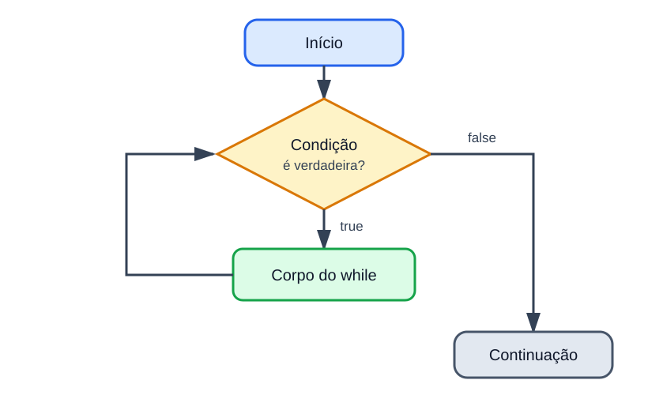
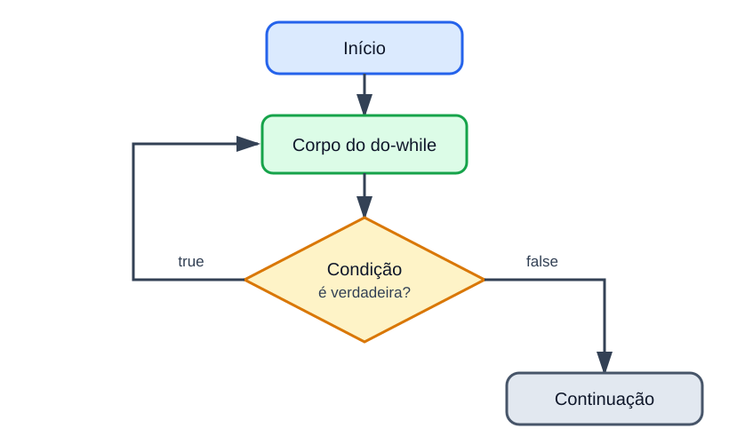

Java · Seção 5
Estruturas repetitivas
Executar, observar, repetir — até que uma condição determine o fim.
O próximo passo
Decidir uma vez já não é suficiente
Seção 3
O programa executava instruções em sequência.
Seção 4
O programa passou a escolher caminhos.
Seção 5
O programa poderá voltar e executar um bloco novamente.
Mapa da seção
Oito blocos em progressão
1 · Depuração
Observar a execução.
2 · while
Repetir por condição.
3 · Mesa
Simular o while.
4 · for
Organizar um contador.
5 · Mesa
Simular o for.
6 · do-while
Executar antes de testar.
7 · Escolha
Comparar e controlar laços.
8 · OCP
Consolidar regras da prova.
Bloco 1
Depuração no Eclipse
Trocar suposições por evidências.
Depurar
Executar o programa de forma controlada
O depurador mostra
- a próxima linha a executar;
- os valores atuais das variáveis;
- o caminho seguido pelo fluxo.
O depurador não faz
- não corrige o código;
- não decide o resultado esperado;
- não substitui a leitura do programa.
Ponto de interrupção
O programa pausa antes da linha marcada
int a = 10; int b = 3; int quociente = a / b; int resto = a % b;
- Marque a linha na margem do editor.
- Execute com Debug As → Java Application.
- A linha destacada é a próxima instrução.
int a = 10;, a atribuição ainda não aconteceu.Controles principais
Avance apenas o necessário
| Ação | Atalho comum | Efeito |
|---|---|---|
| Step Over | F6 | Executa a linha e para na próxima do mesmo método. |
| Step Into | F5 | Entra no método chamado. |
| Step Return | F7 | Termina o método atual e volta ao chamador. |
| Resume | F8 | Continua até outro breakpoint ou até o fim. |
| Terminate | ■ | Encerra a execução. |
Aba Variables
Compare cada valor com a previsão
| Depois de executar | Valores observáveis |
|---|---|
int a = 10; | a = 10 |
int b = 3; | a = 10, b = 3 |
int quociente = a / b; | quociente = 3 |
int resto = a % b; | resto = 1 |
condição do if | o fluxo segue para o bloco do else |
Depurando um laço
A condição é visitada mais vezes que o corpo
int contador = 1; int soma = 0; while (contador <= 3) { soma += contador; contador++; }
| Condição | contador | soma | resultado |
|---|---|---|---|
| 1ª | 1 | 0 | true |
| 2ª | 2 | 1 | true |
| 3ª | 3 | 3 | true |
| 4ª | 4 | 6 | false |
Roteiro de investigação
Pare na primeira diferença
Prever
Marcar
Observar
Comparar
Corrigir
Bloco 2
Estrutura repetitiva while
Repetir enquanto uma condição for verdadeira.
Fluxo do while
A condição vem antes do corpo

while (condicao) { // instruções repetidas }
- Se a condição for
false, o laço termina. - Se for
true, o corpo executa. - Depois do corpo, o fluxo volta à condição.
Pré-teste
Um while pode executar zero vezes
int numero = -1; while (numero > 0) { System.out.println(numero); }
Primeira avaliação
-1 > 0 produz false.
O corpo não executa e nada é impresso.
Repetição controlada
Inicialização, condição e atualização
int contador = 1; while (contador <= 5) { System.out.println(contador); contador++; }
contador = 1contador <= 5contador++Papéis diferentes
O contador controla; o acumulador guarda
int numero = 1; int soma = 0; while (numero <= 5) { soma += numero; numero++; }
| numero usado | soma depois |
|---|---|
| 1 | 1 |
| 2 | 3 |
| 3 | 6 |
| 4 | 10 |
| 5 | 15 |
0, o elemento neutro da adição.Quantidade desconhecida
Um valor especial pode sinalizar o fim
int soma = 0; System.out.print("Positivo ou zero para parar: "); int numero = sc.nextInt(); while (numero > 0) { soma += numero; System.out.print("Outro valor: "); numero = sc.nextInt(); } System.out.println("Soma: " + soma);
- A primeira leitura ocorre antes do laço.
- A próxima leitura ocorre dentro do corpo.
- O zero encerra, mas não entra na soma.
Insistir enquanto inválido
O while também valida entradas
System.out.print("Nota de 0 a 10: "); double nota = sc.nextDouble(); while (nota < 0.0 || nota > 10.0) { System.out.print("Nota invalida: "); nota = sc.nextDouble(); } System.out.println("Nota: " + nota);
A condição descreve o erro
Enquanto a nota estiver fora do intervalo, uma nova leitura será feita.
Quando ela se tornar válida, o laço termina.
Direção da atualização
A condição precisa combinar com o movimento
Coerente
int x = 5; while (x >= 1) { System.out.println(x); x--; }
Não termina
int x = 5; while (x <= 5) { System.out.println(x); x--; }
Laço infinito
A condição nunca se torna falsa
int x = 1; while (x <= 5) { System.out.println(x); // faltou atualizar x }
Verifique
- a variável da condição muda?
- muda na direção do fim?
- o limite pode ser alcançado?
- uma nova entrada é realmente lida?
Off-by-one
Um operador decide se o limite entra
x < 5
Valores usados: 1, 2, 3, 4
Quatro execuções.
x <= 5
Valores usados: 1, 2, 3, 4, 5
Cinco execuções.
Bloco 3
Teste de mesa com while
Registrar cada passagem pela condição e pelo corpo.
Simulação fiel
Siga a mesma ordem da máquina
iniciais
condição
corpo
variáveis
- Crie uma linha por chegada à condição ou por iteração e mantenha esse padrão.
- Inclua a última avaliação, aquela que produz
false.
Exemplo completo
Quatro corpos, cinco condições
int x = 1; int soma = 0; while (x <= 4) { soma += x; x++; }
| condição | x | soma | x <= 4 |
|---|---|---|---|
| 1ª | 1 | 0 | true |
| 2ª | 2 | 1 | true |
| 3ª | 3 | 3 | true |
| 4ª | 4 | 6 | true |
| 5ª | 5 | 10 | false |
Momento do valor
Incrementar antes ou depois muda a saída
while (x <= 3) { System.out.println(x); x++; }
while (x <= 3) { x++; System.out.println(x); }
Contagem seletiva
Nem toda variável muda em toda iteração
int numero = 1; int pares = 0; while (numero <= 6) { if (numero % 2 == 0) { pares++; } numero++; }
| numero | par? | pares |
|---|---|---|
| 1 | não | 0 |
| 2 | sim | 1 |
| 3 | não | 1 |
| 4 | sim | 2 |
| 5 | não | 2 |
| 6 | sim | 3 |
Sentinela e média
Soma e quantidade precisam caminhar juntas
int soma = 0, quantidade = 0; int numero = sc.nextInt(); while (numero != 0) { soma += numero; quantidade++; numero = sc.nextInt(); } if (quantidade > 0) { double media = (double) soma / quantidade; }
if evita divisão por zero quando a primeira entrada já é a sentinela.A tabela revela o erro
Atribuir não é acumular
Substitui
soma = x;
Para x = 1, 2, 3, a soma termina em 3.
Acumula
soma += x;
O valor anterior é preservado: 1 + 2 + 3 = 6.
Bloco 4
Estrutura repetitiva for
Reunir o controle do contador em um só lugar.
Cabeçalho do for
Três partes separadas por ponto e vírgula
for (int i = 1; i <= 5; i++) { System.out.println(i); }
uma única vez
antes de cada corpo
depois de cada corpo
Fluxo exato
A inicialização não se repete
1 vez
condição
corpo
contador
Mesma lógica
O for organiza um while com contador
for (int i = 1; i <= 5; i++) { System.out.println(i); }
int i = 1; while (i <= 5) { System.out.println(i); i++; }
Quando usar
O for torna a contagem explícita
Natural com for
- repetir dez vezes;
- contar de 1 a 100;
- avançar de 2 em 2;
- fazer contagem regressiva.
Natural com while
- ler até receber uma sentinela;
- insistir enquanto inválido;
- repetir sem saber a quantidade;
- depender de uma condição geral.
Inclusivo e exclusivo
Quatro cabeçalhos parecidos, quatro contagens
| Cabeçalho | Valores usados | Repetições |
|---|---|---|
i = 1; i <= 5; i++ | 1, 2, 3, 4, 5 | 5 |
i = 1; i < 5; i++ | 1, 2, 3, 4 | 4 |
i = 0; i < 5; i++ | 0, 1, 2, 3, 4 | 5 |
i = 0; i <= 5; i++ | 0, 1, 2, 3, 4, 5 | 6 |
Atualizações diferentes
O passo não precisa ser 1
De 2 em 2
for (int i = 0; i <= 10; i += 2) { System.out.println(i); }
Regressiva
for (int i = 5; i >= 1; i--) { System.out.println(i); }
Contador e resultado
Declare cada variável no escopo necessário
int soma = 0; for (int i = 1; i <= 5; i++) { soma += i; } System.out.println(soma); // 15 // System.out.println(i); // i não existe aqui
soma
É usada depois do laço, então foi declarada antes.
i
Controla apenas o laço, então foi declarada no cabeçalho.
Leitura controlada
Uma quantidade conhecida dispensa sentinela
System.out.print("Quantidade de notas: "); int quantidade = sc.nextInt(); double soma = 0.0; for (int i = 1; i <= quantidade; i++) { System.out.print("Nota " + i + ": "); double nota = sc.nextDouble(); soma += nota; } if (quantidade > 0) { System.out.printf("Media: %.2f%n", soma / quantidade); }
Sintaxe flexível
As expressões podem faltar; os separadores, não
Sem inicialização
int i = 0; for (; i < 3; i++) { }
Sem atualização
for (int i = 0; i < 3;) { i++; }
Sem condição
for (;;) { // laço infinito }
Mais de uma expressão
Inicialização e atualização aceitam listas compatíveis
for (int a = 1, b = 5; a <= b; a++, b--) { System.out.println(a + " " + b); }
| Iteração | a | b | Saída |
|---|---|---|---|
| 1 | 1 | 5 | 1 5 |
| 2 | 2 | 4 | 2 4 |
| 3 | 3 | 3 | 3 3 |
Laços aninhados
O laço interno completa para cada volta do externo
for (int linha = 1; linha <= 2; linha++) { for (int coluna = 1; coluna <= 3; coluna++) { System.out.println(linha + " " + coluna); } }
Ordem da saída
1 1 · 1 2 · 1 3
2 1 · 2 2 · 2 3
Bloco 5
Teste de mesa com for
Não esquecer a atualização entre o corpo e a próxima condição.
Etapas do for
A atualização ocupa seu próprio momento
| Etapa | i | soma | i <= 4 | Ação |
|---|---|---|---|---|
| inicialização | 1 | 0 | — | prepara |
| 1ª condição | 1 | 0 | true | soma recebe 1 |
| atualização | 2 | 1 | — | i++ |
| 2ª condição | 2 | 1 | true | soma recebe 3 |
| atualização | 3 | 3 | — | i++ |
| 3ª condição | 3 | 3 | true | soma recebe 6 |
| 4ª condição | 4 | 6 | true | soma recebe 10 |
| 5ª condição | 5 | 10 | false | encerra |
Previsão rápida
Conte os valores que chegam ao corpo
Passo positivo
Começa em 2, usa i <= 8 e soma 2.
2, 4, 6, 8 → 4 repetições
Passo negativo
Começa em 5, usa i >= 1 e subtrai 1.
5, 4, 3, 2, 1 → 5 repetições
Combinando estruturas
O for percorre; o if seleciona
int somaPares = 0; for (int i = 1; i <= 6; i++) { if (i % 2 == 0) { somaPares += i; } }
| i | par? | soma |
|---|---|---|
| 1 | não | 0 |
| 2 | sim | 2 |
| 3 | não | 2 |
| 4 | sim | 6 |
| 5 | não | 6 |
| 6 | sim | 12 |
Erros típicos
Leia o sintoma e revise a parte correspondente
| Sintoma | Verificação |
|---|---|
| uma repetição a menos | o limite deveria incluir o último valor? |
| uma repetição a mais | o início ou o limite incluiu um valor extra? |
| laço infinito | a atualização aproxima o contador do fim? |
| contador inesperado | ele também está sendo alterado no corpo? |
| soma errada | o acumulador começou em zero e usa +=? |
Bloco 6
Estrutura repetitiva do-while
Executar o corpo antes da primeira condição.
Pós-teste
O corpo executa pelo menos uma vez

do { // instruções repetidas } while (condicao);
Pré-teste × pós-teste
A posição da condição muda o mínimo de execuções
while
while (x < 5) { System.out.println(x); }
Com x = 10: zero vezes.
do-while
do { System.out.println(x); } while (x < 5);
Com x = 10: uma vez.
Uso natural
O menu precisa aparecer antes da escolha
int opcao; do { System.out.println("1 - Consultar"); System.out.println("0 - Sair"); opcao = sc.nextInt(); switch (opcao) { case 1 -> System.out.println("Consulta"); case 0 -> System.out.println("Fim"); default -> System.out.println("Opcao invalida"); } } while (opcao != 0);
Primeira leitura no corpo
O do-while evita duplicar a leitura
double nota; do { System.out.print("Nota de 0 a 10: "); nota = sc.nextDouble(); } while (nota < 0.0 || nota > 10.0); System.out.println("Nota registrada: " + nota);
Dois pontos e vírgulas
Um é obrigatório; o outro cria um laço vazio
Correto
do { x++; } while (x < 3);
O ; encerra a estrutura.
Outro significado
while (x < 3); { x++; }
O primeiro ; é o corpo vazio do while.
Bloco 7
Escolha e controle dos laços
while, for, do-while, break e continue.
Comparação direta
A intenção do problema orienta a escolha
| Estrutura | Teste | Mínimo | Uso natural |
|---|---|---|---|
while | antes | 0 | quantidade desconhecida, sentinela ou validação |
for | antes | 0 | contador e quantidade conhecida |
do-while | depois | 1 | menu ou ação anterior ao primeiro teste |
Interrupção
break encerra o laço mais interno
for (int i = 1; i <= 10; i++) { if (i == 4) { break; } System.out.print(i + " "); }
Saída
1 2 3
Quando i == 4, o fluxo sai do for. A impressão daquela iteração não ocorre.
Pular uma iteração
continue ignora o restante do corpo atual
for (int i = 1; i <= 5; i++) { if (i == 3) { continue; } System.out.print(i + " "); }
Saída
1 2 4 5
No for, o fluxo ainda passa pela atualização i++ antes da próxima condição.
Ponto de atenção
No while, atualize antes de continuar
Preso em 3
if (i == 3) { continue; } i++;
Progride
if (i == 3) { i++; continue; } i++;
continue volta diretamente à condição do while; qualquer atualização abaixo dele é pulada.Laços aninhados
Um break simples encerra apenas o laço interno
for (int i = 1; i <= 3; i++) { for (int j = 1; j <= 3; j++) { if (j == 2) { break; } System.out.print(i + "" + j + " "); } }
Saída
11 21 31
O laço de j para em 2, mas o laço de i continua.
Guia de decisão
Escolha a estrutura que explica melhor a intenção
Quantidade conhecida?
Sim: comece avaliando um for.
Pode executar zero vezes?
Sim: use pré-teste com while ou for.
Precisa executar primeiro?
Sim: considere do-while.
Bloco 8
Estruturas repetitivas na OCP Java SE 25
A prova exige simular a ordem exata da execução.
Implementing Program Flow Control
O núcleo cobrado nesta seção
Estruturas
while, do-while e for tradicional.
Controle
Laços aninhados, break e continue.
Variáveis
Escopo e inicialização dos controles e resultados.
for-each será estudado depois dos arrays, quando seu pré-requisito já tiver sido apresentado.Armadilha de leitura
Um ponto e vírgula pode ser todo o corpo
int x = 1; while (x <= 3); { x++; }
Corpo do while
É a instrução vazia ;.
Bloco seguinte
Não pertence ao laço e nunca é alcançado, porque x não muda.
Inicialização definida
Um while talvez nunca atribua o valor
boolean executar = false; int resultado; while (executar) { resultado = 10; } System.out.println(resultado); // não compila
resultado recebeu um valor.Escopo do contador
O local da declaração decide o que existe depois
Limitado ao for
for (int i = 0; i < 3; i++) { } // i não existe
Continua em escopo
int i = 0; for (; i < 3; ) { i++; } System.out.println(i); // 3
Modelo mental
Para prever um laço, acompanhe quatro coisas
1
valor inicial
2
condição atual
3
ordem do corpo
4
atualização
Ao final da seção
O que você já é capaz de fazer
- depurar linha a linha;
- construir e simular
while; - usar contadores e acumuladores;
- trabalhar com sentinelas.
- organizar contagens com
for; - usar
do-whilequando necessário; - controlar laços com
breakecontinue; - reconhecer armadilhas de escopo e fluxo.
Seção 6
Outros tópicos básicos sobre Java
Consolidar detalhes da linguagem antes de criar os primeiros objetos.